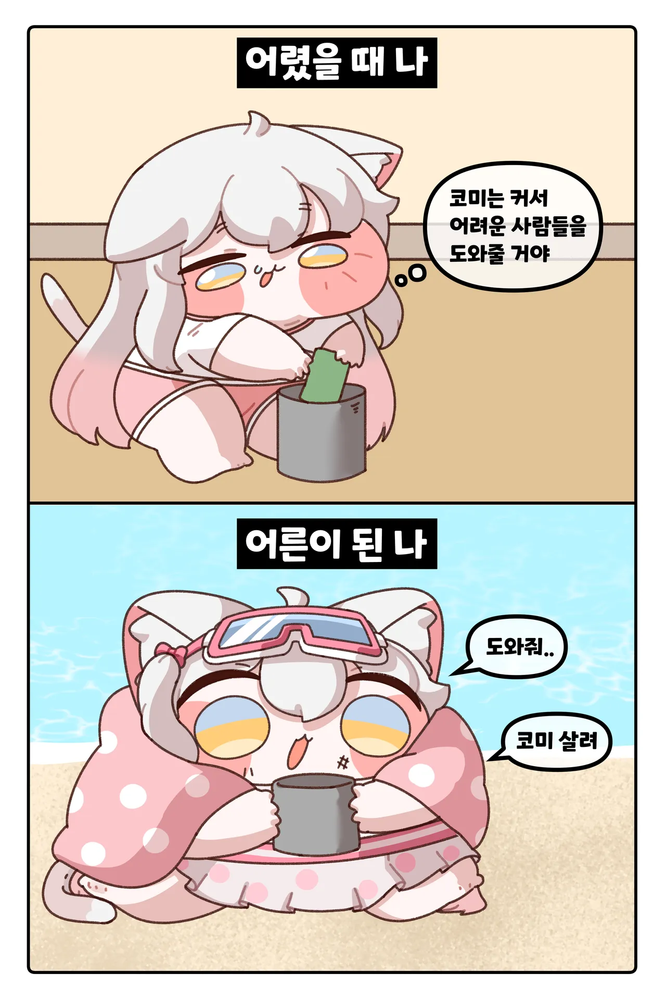
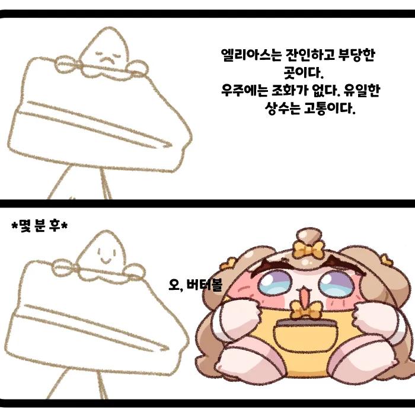
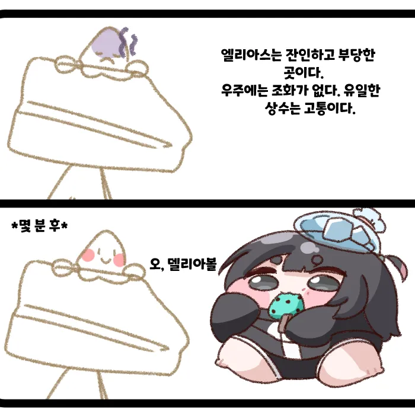
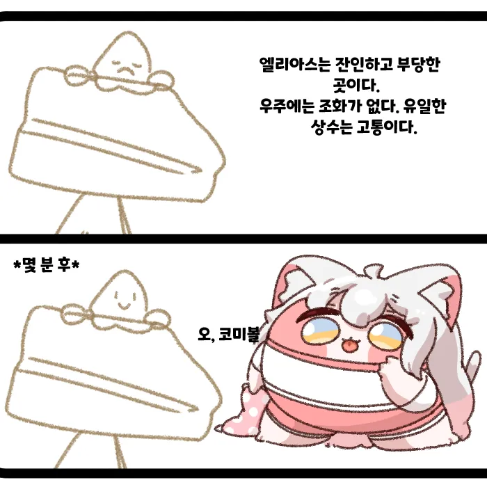
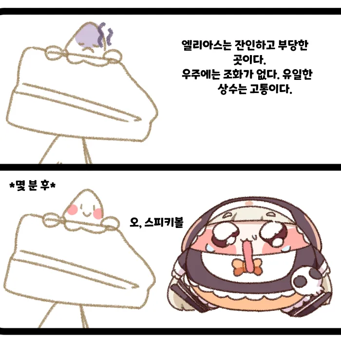
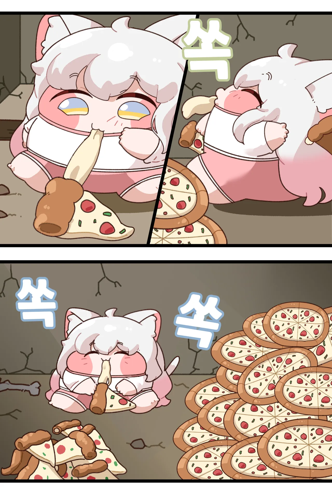
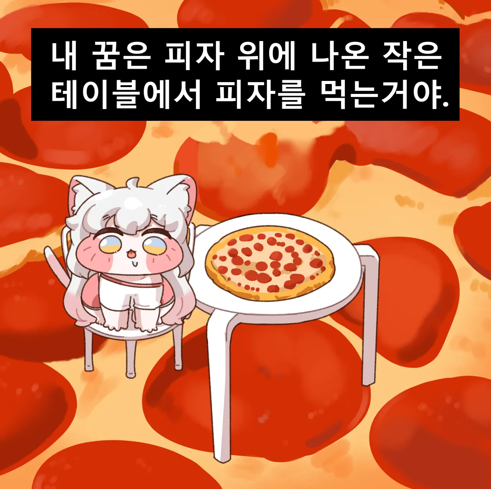

https://www.pixiv.net/users/44345295







https://www.pixiv.net/users/44345295
댓글
수집 당시 댓글 16개
싸우자 · 18 시간 전
· 배추도사고무도사 · 13 시간 전
보아라! 불의 땅이 포효하는 모습을!
· 미녀와야스 · 12 시간 전
우리 딸이 요요하는 모습을!@
· 하드코어미식가 · 11 시간 전
여기까지가 돌겜 템플런임
· 섹시코만도 · 8 시간 전
판드랄추
여우비 · 18 시간 전
그렇게됐수다 · 18 시간 전
코미 귀여버
이천왓치 · 16 시간 전
착한생각올바른생각 · 12 시간 전
얘네들 왜이리 살쪘어
· 머신스피릿은죽지않는다 · 11 시간 전
디아나 촌장이 파놓은 밥먹고가렴 함정에 빠져버림
나아파치킨사줘 · 12 시간 전
냥냥E차냥 · 12 시간 전
이 사람 볼툰 귀엽고 재밌더라
처음엔 공식에서 새로 영입한 신인 작가인줄 알았음
잡고싶은허리 · 12 시간 전
로스케빌런 · 11 시간 전
유기농 멍청이는 ㅅㅂㅋㅋㅋㅋ 보자마자 개터졌네
· 변막 · 11 시간 전
고양이로 만들어진 콘이 원조일건데 내가 갖고있질 않아서 보여줄 수가 없구나!
야밤에라면 · 11 시간 전